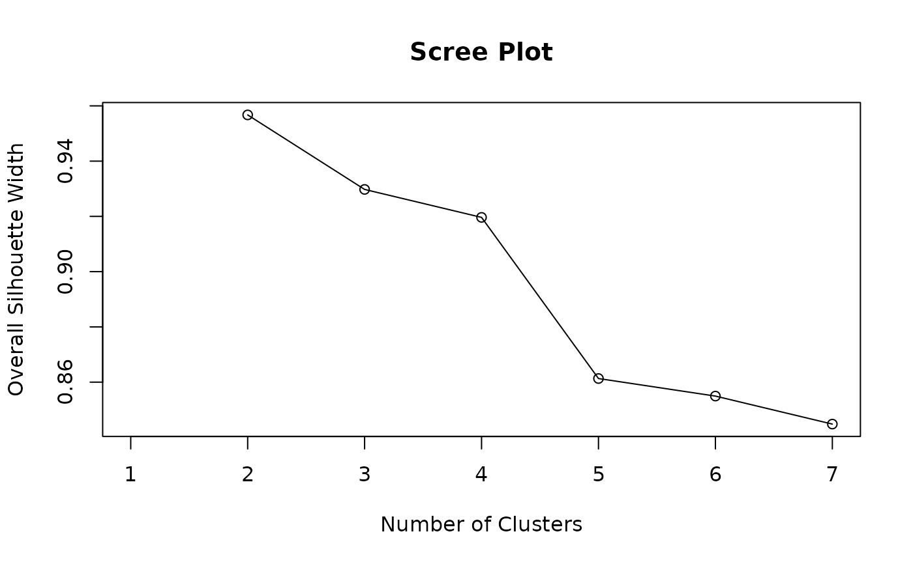

Calculate Silhouette Widths, Summary, and Plot for Clustering Results
Source:R/Silhouette.R, R/plotSilhouette.R, R/summary.silhouette.R
Silhouette.RdComputes the silhouette width for each observation based on clustering results, measuring how similar an observation is to its own cluster compared to nearest neighbor cluster. The silhouette width ranges from -1 to 1, where higher values indicate better cluster cohesion and separation.
Usage
Silhouette(
prox_matrix,
proximity_type = c("dissimilarity", "similarity"),
method = c("medoid", "pac"),
average = c("crisp", "fuzzy", "median"),
prob_matrix = NULL,
a = 2,
sort = FALSE,
print.summary = FALSE,
clust_fun = NULL,
...
)
# S3 method for class 'Silhouette'
plot(
x,
label = FALSE,
summary.legend = TRUE,
grayscale = FALSE,
linetype = c("dashed", "solid", "dotted", "dotdash", "longdash", "twodash"),
...
)
# S3 method for class 'Silhouette'
summary(object, print.summary = TRUE, ...)Arguments
- prox_matrix
A numeric matrix where rows represent observations and columns represent proximity measures (e.g., distances or similarities) to clusters. Typically, this is a membership or dissimilarity matrix from clustering results. If
clust_funis provided,prox_matrixshould be the name of the matrix component as a string (e.g., ifclust_fun = fcmfrom ppclust package theprox_matrix = "d").- proximity_type
Character string specifying the type of proximity measure in
prox_matrix. Options are"similarity"(higher values indicate closer proximity) or"dissimilarity"(lower values indicate closer proximity). Defaults to"dissimilarity".- method
Character string specifying the silhouette calculation method. Options are
"pac"(Probability of Alternative Cluster) or"medoid". Defaults to"medoid".- average
Character string specifying the method for computing the average silhouette width. Options are:
"crisp"– unweighted (simple) average."fuzzy"– weighted average based on membership probability differences."median"– median silhouette width across observations.
Defaults to
"crisp".- prob_matrix
A numeric matrix of cluster membership probabilities, where rows represent observations and columns represent clusters (depending on
prob_type). Ifclust_funis provided,prob_matrixcan be given as the name of the matrix component (e.g.,"u"for thefcmfunction). WhenNULLandaverage = "fuzzy", the function falls back to computing the"crisp"silhouette with a warning, since fuzzy silhouette widths require membership probabilities. Defaults toNULL.- a
Numeric value controlling the fuzzifier or weight scaling in fuzzy silhouette averaging. Higher values increase the emphasis on strong membership differences. Must be positive. Defaults to
2.- sort
Logical; if
TRUE, sorts the outputwidthsdata frame by cluster and descending silhouette width. Defaults toFALSE.- print.summary
Logical; if
TRUE, prints a summary table of average silhouette widths and sizes for each cluster. Defaults toTRUE.- clust_fun
Optional S3 or S4 function object or function as character string specifying a clustering function that produces the proximity measure matrix. For example,
fcmor"fcm". If provided,prox_matrixmust be the name of the matrix component in the clustering output (e.g.,"d"forfcmwhenproximity_type = "dissimilarity"). Defaults toNULL.- ...
Additional arguments passed to
clust_fun, such asx,centersforfcm.- x
An object of class
"Silhouette", typically the output of theSilhouette,softSilhouette,dbSilhouetteandcerSilhouettefunction. Also supports objects classeseclust,hcut,pam,clara,fanny,silhouette, orsilhouettefrom cluster, factoextra, drclust packages. For these classes, explicitly callplotSilhouette()to generate the plot.- label
Logical; if
TRUE, the x-axis is labeled with observation row indices from the input data and titled "Row Index". Defaults toFALSE.- summary.legend
Logical; if
TRUE, prints a summary of average silhouette widths and sizes for each cluster in legend ("Cluster (Size): Width"). IfFALSE, the legend shows only cluster numbers. Defaults toTRUE.- grayscale
Logical; if
TRUE, the plot uses a grayscale color palette for clusters. IfFALSE, uses the default or specified color palette. Defaults toFALSE.- linetype
Character or numeric value specifying the type of line to be used for the horizontal reference line indicating the average silhouette width. Accepts standard ggplot2 linetype values, such as:
Character:
"solid","dashed","dotted","dotdash","longdash","twodash".Numeric: integers from 0 to 6 corresponding to ggplot2 line patterns.
Defaults to
"dashed".- object
An object of class
"Silhouette", typically the output of theSilhouette,softSilhouette,dbSilhouette, andcerSilhouettefunction.
Value
A data frame of class "Silhouette" containing cluster assignments, nearest neighbor clusters, silhouette widths for each observation, and weights (for fuzzy clustering). The object includes the following attributes:
- proximity_type
The proximity type used (
"similarity"or"dissimilarity").- method
The silhouette calculation method used (
"medoid"or"pac").- average
Character — the averaging method:
"crisp","fuzzy", or"median".
Further, summary returns a list containing:
clus.avg.widths: A named numeric vector of average silhouette widths per cluster.avg.width: The overall average silhouette width.sil.sum: A data frame with columnscluster,size, andavg.sil.widthsummarizing cluster sizes and average silhouette widths.
Details
The Silhouette function implements the Simplified Silhouette method introduced by Van der Laan, Pollard, & Bryan (2003), which adapts and generalizes the classic silhouette method of Rousseeuw (1987).
Clustering quality is evaluated using a proximity matrix, denoted as \(\Delta = [\delta_{ik}]_{n \times K}\) for dissimilarity measures or \(\Delta' = [\delta'_{ik}]_{n \times K}\) for similarity measures. Here, \(i = 1, \ldots, n\) indexes observations, and \(k = 1, \ldots, K\) indexes clusters. \(\delta_{ik}\) represents the dissimilarity (e.g., distance) between observation \(i\) and cluster \(k\), while \(\delta'_{ik}\) represents similarity values.
The silhouette width \(S(x_i)\) for observation \(i\) depends on the proximity type:
For dissimilarity measures: $$ S(x_i) = \frac{ \min_{k' \neq k} \delta_{ik'} - \delta_{ik} }{ N(x_i) } $$ For similarity measures: $$ S(x_i) = \frac{ \delta'_{ik} - \max_{k' \neq k} \delta'_{ik'} }{ N(x_i) } $$ where \(N(x_i)\) is a normalizing factor defined by the method.
Choice of method:
The normalizer \(N(x_i)\) is selected according to the method argument. The method names reference their origins but may be used with any proximity matrix, not exclusively certain clustering algorithms:
For
medoid(Van der Laan et al., 2003):Dissimilarity: \(\max(\delta_{ik}, \min_{k' \neq k} \delta_{ik'})\)
Similarity: \(\max(\delta'_{ik}, \max_{k' \neq k} \delta'_{ik'})\)
For
pac(Raymaekers & Rousseeuw, 2022):Dissimilarity: \(\delta_{ik} + \min_{k' \neq k} \delta_{ik'}\)
Similarity: \(\delta'_{ik} + \max_{k' \neq k} \delta'_{ik'}\)
Note:
The "medoid" and "pac" options reflect the normalization formula—not a requirement to use the PAM algorithm or posterior/ensemble methods—and are general scoring approaches. These methods can be applied to any suitable proximity matrix, including proximity, similarity, or dissimilarity matrices derived from classification algorithms. This flexibility means silhouette indices may be computed to assess group separation when clusters or groups are formed from classification-derived proximities, not only from unsupervised clustering.
If average = "crisp", the crisp silhouette index is calculated as (\(CS\)) is:
$$
CS = \frac{1}{n} \sum_{i=1}^{n} S(x_i)
$$
summarizing overall clustering quality.
If average = "fuzzy" and prob_matrix is provided, denoted as \(\Gamma = [\gamma_{ik}]_{n \times K}\),
with \(\gamma_{ik}\) representing the probability of observation \(i\) belonging to cluster \(k\),
the fuzzy silhouette index (\(FS\)) is calculated as:
$$
FS = \frac{\sum_{i=1}^{n} w_i S(x_i) }{\sum_{i=1}^{n} w_i}
$$
where \(w_i = \sum_{i=1}^{n} \left( \gamma_{ik} - \max_{k' \neq k} \gamma_{ik'} \right)^{\alpha}\) is weight and \(\alpha\) (the a argument) controls the emphasis on confident assignments.
If average = "median" then median Silhoutte is Calculated
References
Rousseeuw, P. J. (1987). Silhouettes: A graphical aid to the interpretation and validation of cluster analysis. Journal of Computational and Applied Mathematics, 20, 53–65. doi:10.1016/0377-0427(87)90125-7
Van der Laan, M., Pollard, K., & Bryan, J. (2003). A new partitioning around medoids algorithm. Journal of Statistical Computation and Simulation, 73(8), 575–584. doi:10.1080/0094965031000136012
Campello, R. J., & Hruschka, E. R. (2006). A fuzzy extension of the silhouette width criterion for cluster analysis. Fuzzy Sets and Systems, 157(21), 2858–2875. doi:10.1016/j.fss.2006.07.006
Raymaekers, J., & Rousseeuw, P. J. (2022). Silhouettes and quasi residual plots for neural nets and tree-based classifiers. Journal of Computational and Graphical Statistics, 31(4), 1332–1343. doi:10.1080/10618600.2022.2050249
Bhat Kapu, S., & Kiruthika. (2024). Some density-based silhouette diagnostics for soft clustering algorithms. Communications in Statistics: Case Studies, Data Analysis and Applications, 10(3-4), 221-238. doi:10.1080/23737484.2024.2408534
Examples
# Standard silhouette with k-means on iris dataset
data(iris)
# Crisp Silhouette with k-means
out <- kmeans(iris[, -5], 3)
if (requireNamespace("ppclust", quietly = TRUE)) {
library(proxy)
dist <- proxy::dist(iris[, -5], out$centers)
silh_out <- Silhouette(dist,print.summary = TRUE)
plot(silh_out)
} else {
message("Install 'ppclust': install.packages('ppclust')")
}
#>
#> Attaching package: ‘proxy’
#> The following objects are masked from ‘package:stats’:
#>
#> as.dist, dist
#> The following object is masked from ‘package:base’:
#>
#> as.matrix
#> -----------------------------------------------------
#> Average crisp dissimilarity medoid silhouette: 0.6664
#> -----------------------------------------------------
#>
#> cluster size avg.sil.width
#> 1 1 50 0.8592
#> 2 2 62 0.5546
#> 3 3 38 0.5950
#>
#> Available attributes: names, class, row.names, proximity_type, method, average
# \donttest{
# Scree plot for optimal clusters (2 to 7)
if (requireNamespace("ppclust", quietly = TRUE)) {
library(ppclust)
avg_sil_width <- rep(NA,7)
for (k in 2:7) {
out <- Silhouette(
prox_matrix = "d",
proximity_type = "dissimilarity",
prob_matrix = "u",
clust_fun = ppclust::fcm,
x = iris[, 1:4],
centers = k,
average = "fuzzy"
)
# Compute average silhouette width from widths
avg_sil_width[k] <- summary(out, print.summary = FALSE)$avg.width
}
plot(avg_sil_width,
type = "o",
ylab = "Overall Silhouette Width",
xlab = "Number of Clusters",
main = "Scree Plot"
)
} else {
message("Install 'ppclust': install.packages('ppclust')")
}

# }